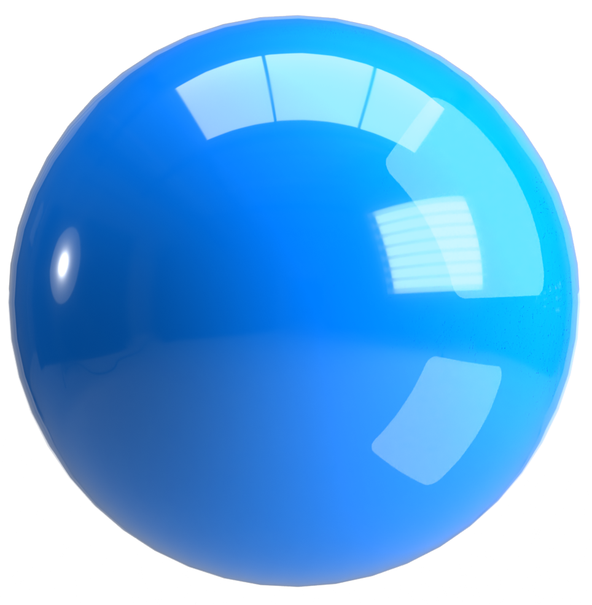
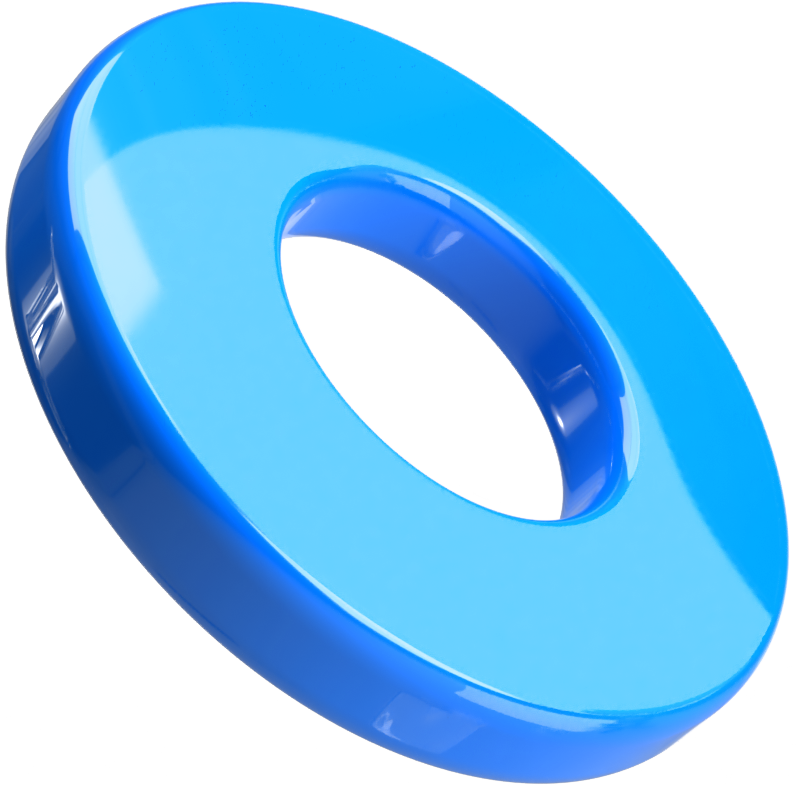
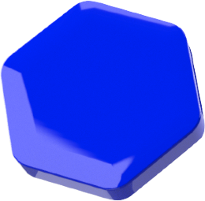
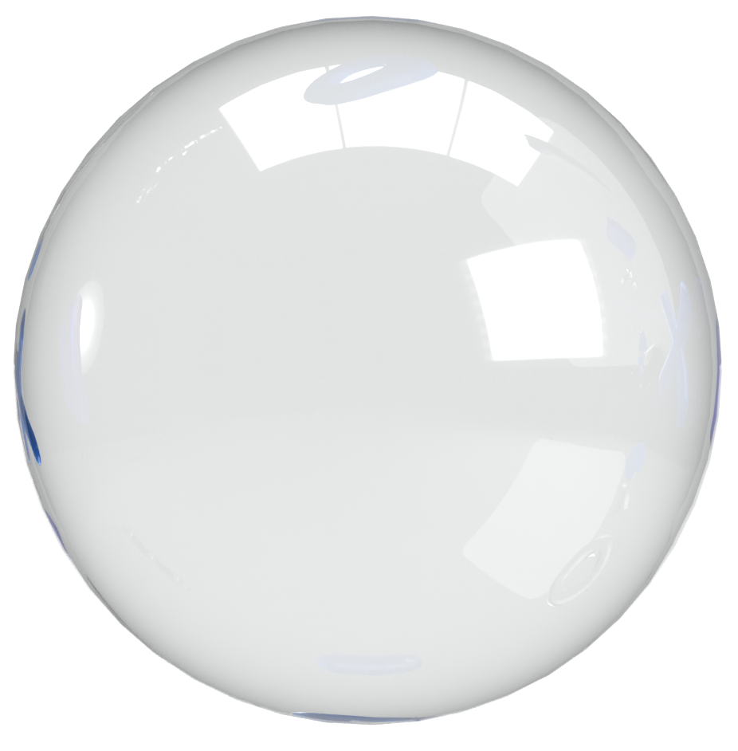
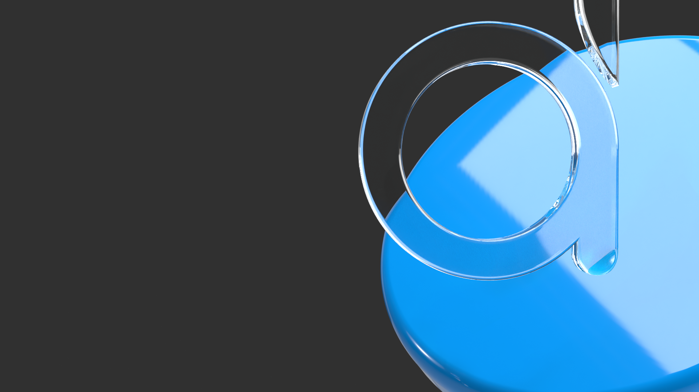
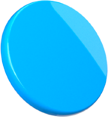
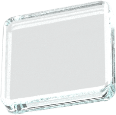
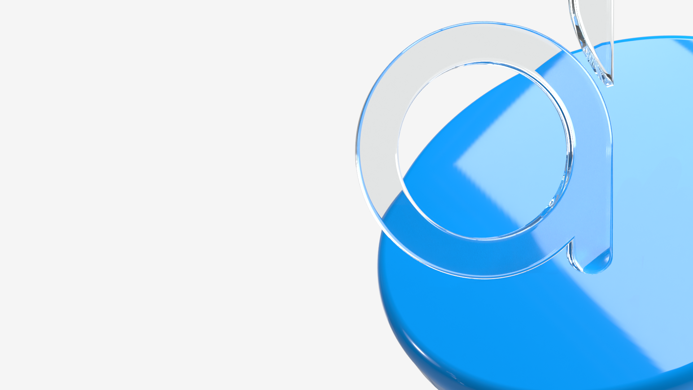
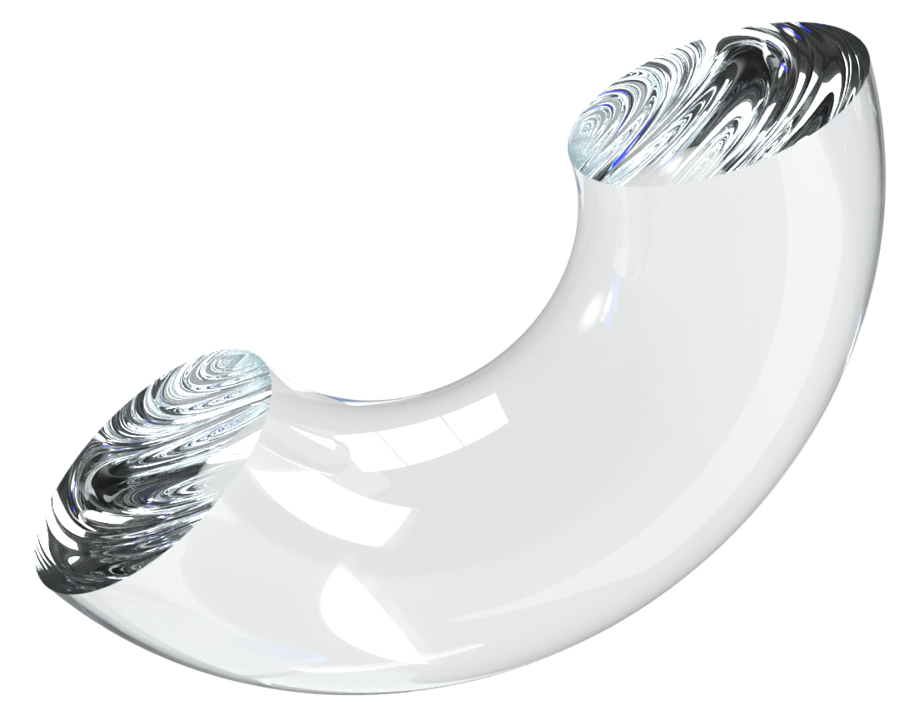

Grouped by file
Collapsible sections, one per source file.
A tour of the agentic coding tool that lives in your terminal — foundations, workflow, orchestration, one end-to-end build.

One engine across terminal, IDEs, Desktop, and browser.
dotnet build & dotnet test
low · medium · high · xhigh · max; high is the Opus 4.8 default everywhere, Claude Code includedxhigh for coding & agentic work; drop to medium/low only when evals show quality holdsmax on the hardest problems — a concurrency bug, a refactor, an EF Core migrationxhigh and triggers a dynamic workflow when warranted/init writes the first CLAUDE.md by reading your repo — you don't hand-author itStop hook that proposes edits, /memory to review; you prune, not transcribeIMPORTANT, YOU MUST, NEVER are followed more reliably
MEMORY.md indexMEMORY.md's first 200 lines load every session; topics load on demand/memory
/ide — pair the CLI with VS Code or a JetBrains IDE like Rider or IntelliJ: diffs open in the editor, and its diagnostics + current selection flow back to Claude/goal — set a verifiable finish line; Claude works across turns until a checker confirms it's met/context — see what's filling the window before it gets tight/rewind — step back to an earlier checkpoint when a path goes wrong

dotnet test, dotnet build, a bUnit render — read the output, then claim/goal "dotnet test exits 0" makes the finish line machine-checkable — a checker model verifies before Claude stopsSKILL.md — YAML frontmatter plus Markdown steps — in .claude/skills/ (repo) or ~/.claude (everywhere)CLAUDE.md section has become a procedure rather than a fact/plugin (Anthropic's official catalog plus community ones) and list what already ships/skill-creator scaffolds the folder and SKILL.md, then helps you eval, improve, and benchmark itdescription is the trigger — say what it does and when to use it; Claude auto-loads it, or you run /skill-namebrainstorming: a local server renders HTML mockups livescreen_dir; you see it; you click a choicePick the structure that fits a long, scannable list.
Collapsible sections, one per source file.
All TODOs ranked, newest first.
Columns by status: open / doing / done.
copy as JSON or diff to bridge back to text| Phase | Scope | Risk |
|---|---|---|
| 1 · Extract | DiscountService | low |
| 2 · Wire | CheckoutEndpoint | medium |
| 3 · Migrate | EF · money in cents | high |
Three routes from intent to interface — choose by how much brand you already have.
Reads your codebase and assets, extracts a reusable system — color, type, components, tokens — then designs on a canvas you refine by chatting.
Builds distinctive, production-grade interfaces — it commits to a bold aesthetic and dodges generic “AI-slop” defaults.
Point Claude at a token + motion system and it composes to spec — exactly how these slides were built.
Drive your own signed-in tab, inspect a live page, or automate in CI — pick by how much a human stays in the loop.
claude --chrome · /chrome in a sessioncsharp-lsp plugin wraps a Roslyn server: go-to-definition, find-references, hover types, live diagnosticscsharp-ls server once, then every session navigates by symbolgh is on PATHSKILL.md shelling out to az devops) for a CLI-only path❯ gh pr create opens the PR · /plugin install azure@claude-plugins-official adds the Azure skills
.worktreeinclude auto-copies local files like .env into new worktreesCLAUDE.md — root rules plus one file per package — and start Claude in the package you're touchingworktree.sparsePaths checks out only the directories a task needs; symlinkDirectories shares one node_modules
SendMessage — not only via the lead/deep-research or use the ultracode keywordsuperpowers:* skill, so a 500-file migration keeps the disciplinePaste a stack trace; Claude locates the bug and proposes the fix — resolved roughly three times as quickly.
Describe the behaviour; Claude writes the test in the codebase's native language — even Rust.
Plans with Claude before writing a line of code — Opus orchestrates, Sonnet plans, Haiku distills; the plan itself becomes a quality gate. 15,000+ customers.
Engineers run parallel sessions; incident investigation time down ~80%.
Runs Claude Code on one of its largest open-source repos with a deep skills setup.
Designers make visual and state-management changes in code they wouldn't normally touch themselves.
xhigh; Claude Design loaded the Devspiration brand as the source of truthbrainstorming then writing-plans — spec and plan before any codefrontend-design skill; every claim fixed to a live source via web + ARS ars-citation-checkOne question at a time, then 2–3 approaches with a recommendation → spec.md committed.
File map first, then a numbered checklist — every step explicit → plan.md.
The Devspiration design system loads via Claude Design — tokens, 3D props, and motion the build must honor.
Researcher + Designer in parallel, Frontend composes the deck; the frontend-design skill polishes within the brand.
Render every slide in a real browser, screenshot it, catch console errors; web + ARS checks confirm each source returns 200.
verification-before-completion, then a commit; Pages redeploys on every push — 6 commits · 4 days.

